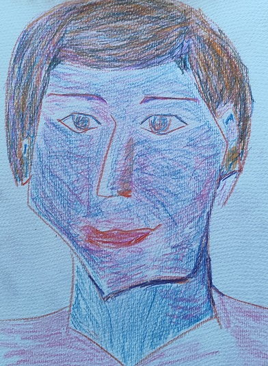
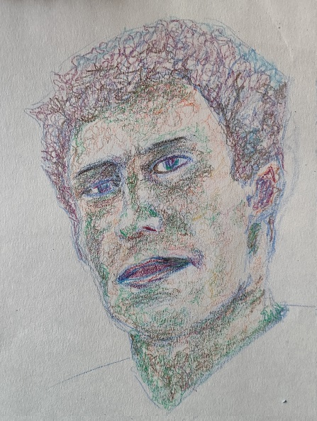
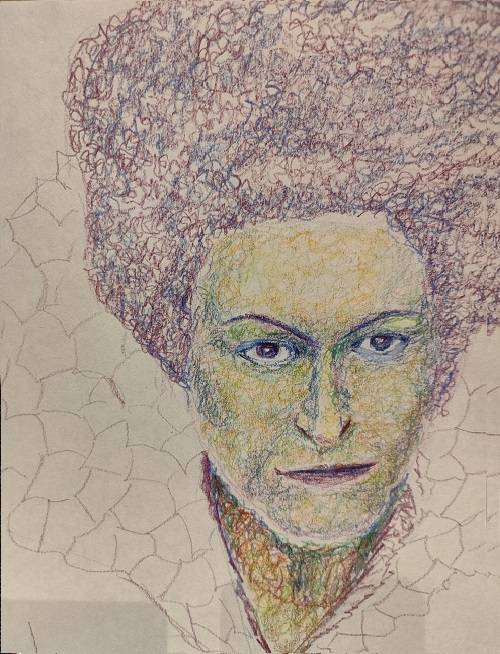
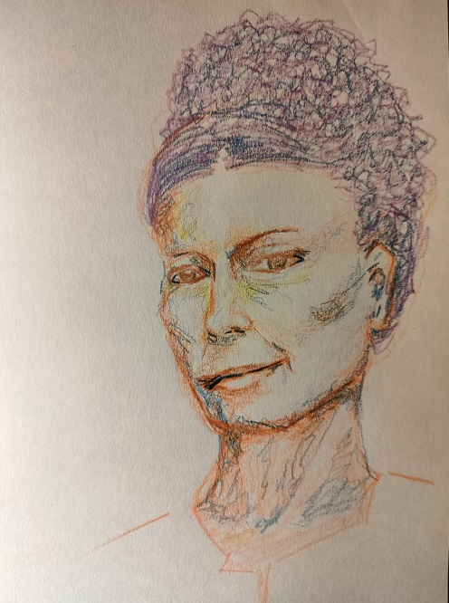
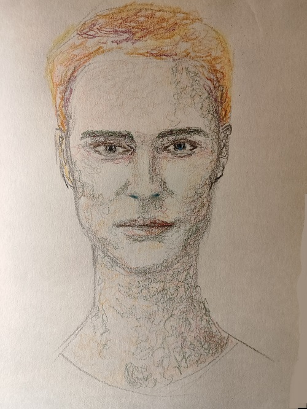

“Los renglones torcidos I” – Lápiz sobre papel – 210×297 mm

“Los renglones torcidos II” – Lápiz sobre papel – 210×297 mm

“Los renglones torcidos III” – Lápiz sobre papel – 210×297 mm

“Los renglones torcidos IV” – Lápiz sobre papel – 210×297 mm

“Los renglones torcidos V” – Lápiz sobre papel – 210×297 mm